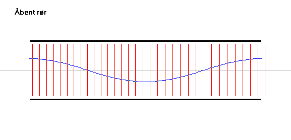

Stående bølger i halvåbent, åbent eller lukket rør. De stående bølger kan være lydbølger.
Den blå kurve gør det lettere at se, hvor de lodrette streger ligger tæt og hvor de ligger langt fra hinanden, dvs. hvor der er overtryk og hvor der er undertryk.
Udfyld nedenstående tabel, idet der i hvert felt skrives antallet af bølgelængder for den pågældende stående bølge.
| halvåbent | åbent | lukket | |
| grundtone | |||
| 1. overtone | |||
| 2. overtone | |||
| … |
Slår man med flad hånd mod enden af et åbent rør, høres to toner. Den ene høres i meget kort tid og den anden i længere tid.
Giv en forklaring på fænomenet.
Udregn frekvensen af de to toner, når rørets længde er 50 cm og lydens hastighed i luft er 340 m/s.